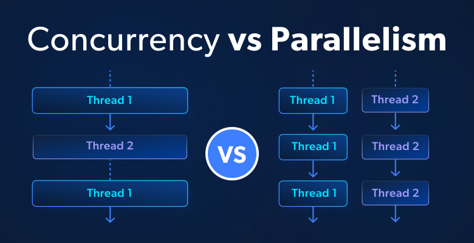

nth = Threads.nthreads()
@time begin
Threads.@spawn sleep(0.25)
Threads.@threads for i in 1:nth
sleep(0.25)
end
endParallel Code - I
2025-04-08
Introduction to Parallel Computing
Moore’s law

Why parallel computing is hard
- We don’t think in parallel
- We learn to write and reason about programs serially
- The desire for parallelism often comes after we’ve written the algorithm
Two types of “multitasking”
- Concurrency: Interruptability
- Parallelism: Independentability

Many types of parallelism
- SIMD
- Multi-threading
- Tasks
- Multi-process
- Shared memory
- Distributed memory
- GPU programming
Right type of parallelism depends on
- machine capabilities
- problem at hand
Processes vs Threads
Processes
- Top-level execution container
- Runs inside a process
- Separate memory space
Threads
- Shared memory space
- Communicate via Inter-Process Communication (IPC)
- Plethora of communication options, runtime dependent
(Non-)Blocking and (A)synchronous


Examples of (non-)blocking and (a)synchronous calls
- Synchronous = Thread will complete an action
- Blocking = Thread will wait until action is completed
- Asynchronous + Non-Blocking: I/O
- Asynchronous + Blocking: Threaded atomics
- Synchronous + Blocking: Standard computing (
@sync) - Synchronous + Non-Blocking: Webservers where an I/O operation can be performed, but one never checks if the operation is completed.
The Main Event Loop
- Julia, like other languages with a runtime (JavaScript, Go, etc.), runs a single process event loop.
- The “Julia program” runs in a green thread controlled by this main event loop.
- The event loop takes over when the program hits a yield point.
- More yield points allow more task switching but can slow down numerical tasks.
Yield Points
- Languages like JavaScript have yield points at every line due to their structure for I/O.
- In Julia, yield points are minimized with common ones at allocations and I/O (e.g.,
println). - Tight non-allocating loops in Julia have no yield points, enhancing numerical performance.
- Long, tight loops may not respond to
Ctrl + Cbecause interrupts are managed by the event loop.
Asynchronous I/O Operations
- The same can be done for writing to the disk:
@asyncis a quick shorthand for spawning a green thread to handle I/O operations.- The main event loop switches between them until all are handled.
@syncensures all green threads are handled before continuing.
Quiz on @threads
0.355747 seconds (66.17 k allocations: 3.329 MiB, 72.04% compilation time)Study Case: Sum
Example: Sum
\[
\mathrm{sum}(a) = \sum_{i=1}^n a_i,
\] where \(n\) is length of a.
Julia built-in
4.58747Julia hand-written
C version
using Libdl
C_code = """
#include <stddef.h>
double c_sum(size_t n, double *X) {
double s = 0.0;
for (size_t i = 0; i < n; ++i) {
s += X[i];
}
return s;
}
"""
const Clib = tempname() # make a temporary file
# compile to a shared library by piping C_code to gcc
open(`gcc -fPIC -O3 -msse3 -xc -shared -o $(Clib * "." * Libdl.dlext) -`, "w") do f
print(f, C_code)
end
# define a Julia function that calls the C function:
c_sum(X::Array{Float64}) = ccall(("c_sum", Clib), Float64, (Csize_t, Ptr{Float64}), length(X), X)c_sum (generic function with 1 method)C benchmark
falsePython built-in
Numpy
Python hand-written
trueFloating point associativity
relax that rule with @fastmath macro
Dict{Any, Any} with 7 entries:
"C" => 11.5831
"Julia hand-written" => 10.8386
"Python numpy" => 4.40681
"Python hand-written" => 1193.13
"Julia built-in" => 4.58747
"Python built-in" => 802.854
"Julia hand-written fast" => 4.84897